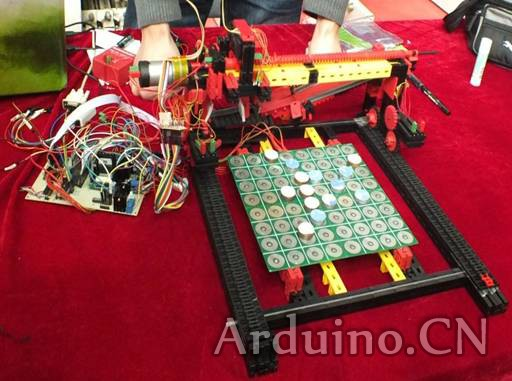
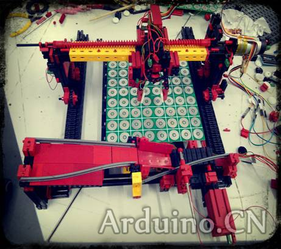
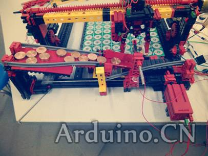
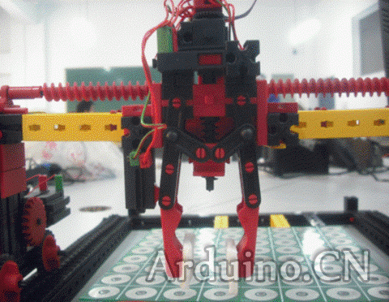
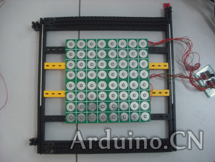
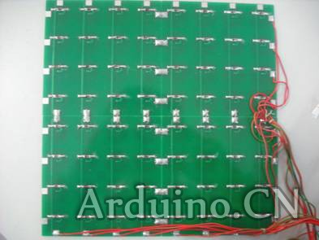
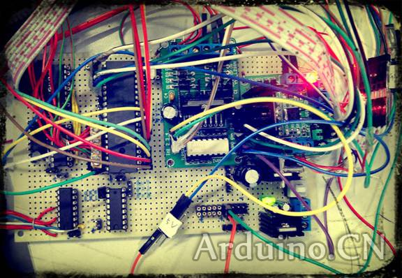
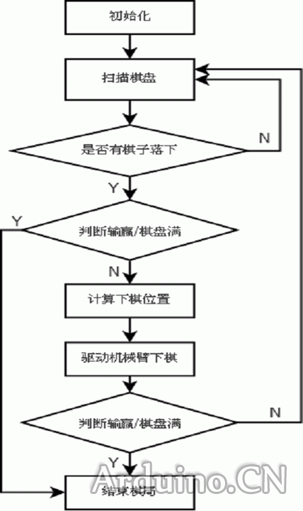

人工智能之五子棋机器人——人机对弈
五子棋新闻
#1 人工智能之五子棋机器人——人机对弈
作者：有志青年 发表时间：2013-2-20 15:18:18
［此帖子已被 有志青年 在 2013-2-20 15:38:45 编辑过］
#2 Re:人工智能之五子棋机器人——人机对弈
作者：有志青年 发表时间：2013-2-20 15:33:30
硬件总体设计：
五子棋对弈机器人主要包含由机械部分和电气控制部分组成。
机械部分全部用慧鱼创意组件搭建而成
机械部分有：
1）底盘模块
2）棋子输送模块
3）机械臂模块
电气部分有：
1）棋盘棋子识别
2）51单片机主控
3）电机驱动模块
4）机械臂反馈模块

［此帖子已被 有志青年 在 2013-2-20 15:39:32 编辑过］
#3 Re:人工智能之五子棋机器人——人机对弈
作者：有志青年 发表时间：2013-2-20 15:35:11
底盘部分与棋子输送装置
底盘上的履带条为机械手臂行走时提供定位
同时支撑着电气部分的棋子识别装置
在后部是棋子输送装置。将棋子送至指定位置以提供机械臂夹取

棋子输送模块
电机启动后，带动履带，使棋子仓抖动起来，棋子匀速下滑。
当棋子运动到履带上后，触碰挡板，单片机控制电机延时一段距离，将棋子运送到指定位置停止，供机械臂夹取。
当机械臂取走棋子后重复以上过程。

棋子输送模块
电机启动后，带动履带，使棋子仓抖动起来，棋子匀速下滑。
当棋子运动到履带上后，触碰挡板，单片机控制电机延时一段距离，将棋子运送到指定位置停止，供机械臂夹取。
当机械臂取走棋子后重复以上过程。

#4 Re:人工智能之五子棋机器人——人机对弈
作者：有志青年 发表时间：2013-2-20 15:36:24
棋盘棋子部分
出于成本的控制需求，棋子的位置识别参考了矩阵键盘
棋子的底部为金属，能够导电。落在棋格上的两个焊盘上，将其导通，相当于按键按下
为了能够识别多个按键，添加了多个二极管


单片机主控
主控板由一块STC的51单片机组成
两组IO负责8X8棋盘上的棋子扫描
一组IO负责控制电机的正转，停止，反转
一组IO接受回馈控制（限位，转速脉冲）
为了留出通信接口，使用了一块三八译码器留出了串口通信。

#5 Re:人工智能之五子棋机器人——人机对弈
作者：有志青年 发表时间：2013-2-20 15:37:55
程序流程
每个流程图的过程都是由子程序构成，使用C语言编写，虽然与汇编相比降低了一点运行效率，但是能加快软件开发过程，也使整个软件的可读性增强了。便于后期的升级维护。

以上是根据比赛答辩的PPT重新撰写的。
五子棋对弈机器人--成都理工大学工程技术学院自动化系
#6 Re:人工智能之五子棋机器人——人机对弈
作者：掌棋宣传员 发表时间：2013-2-20 16:04:26
不知道棋力如何？